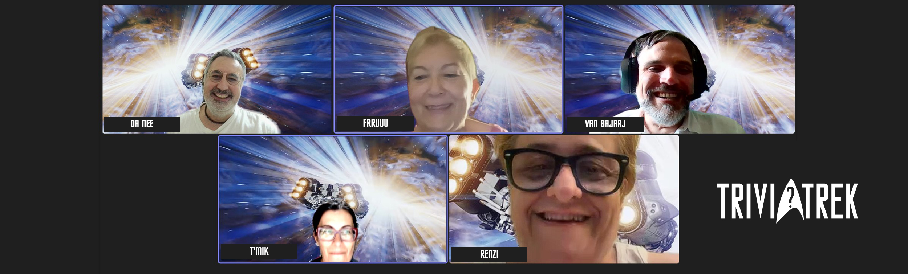
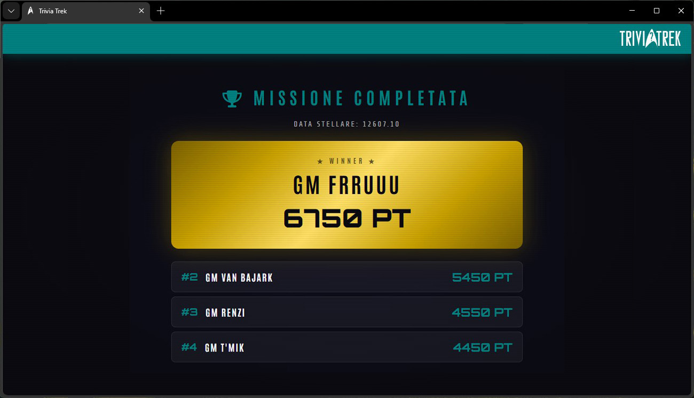

Inizio registrazione.
Come da accordi, apro il canale alle 21.15. Subito si collegano T'Mik e Frruuu a stretto giro.
Renzi ci raggiunge alle 21.30, non appena stacca da lavoro, e la accompagnamo lungo il tragitto che, con vari mezzi, la porterà fino a casa.
Poco dopo anche Van Bajark si unisce a noi dal 'fresco' Canada.
Unica assente, giustificata, è Rael: a quanto pare il nostro CTO ha deciso di seguire le orme di ben più illustri predecessori dandosi all'archeologia.
In particolare, è impegnata in una non meglio specificata Conferenza sugli Etruschi.
Dapprima, come di consueto, si chiacchiera del più e del meno (a tratti appassionatamente) di varie questioni, alcune anche spinose. Nell'ordine:
- fremente attesa per la quarta stagione di SNW in imminente uscita;
- digressioni sulla pericolosità delle oche (e degli orsi) canadesi che a quanto pare sono talmente aggressive da aver causato incidenti anche mortali;
- Renzi si dedica al servizio di info Atac fornendo assistenza sulle corse e le coincidenze dei mezzi pubblici romani ad una passante;
- la domanda del giorno: che fine ha fatto Peter Jacket? Purtroppo non si hanno ancora sue notizie. Ci auguriamo che leggendo delle nostre nuove gesta e reunion (appena saranno pubblicate sul ISTM) gli venga voglia di contattarci e torni presto a bordo. Da parte nostra: 'Ti aspettiamo a braccia aperte!';
- Lea, la gatta di T'Mik, miagola reclamando il suo supplemeto felino preferito;
- Renzi ci rivela di aver modificato il comando di attivazione della sua Alexa in computer: è facile intuire che se guarda un episodio o un film di Star Trek e un personaggio interroga il computer di bordo, la domotica del nostro CSO si attiva con risultati più o meno esilaranti (confesso che anche io, a suo tempo, commisi il medesimo errore, con risultati analoghi);
- nuove rivelazioni dal Canada: anche le tartarughe, a quanto ci riferisce il nostro corrispondente, sono assassine... (nota personale: depennare il Canada dalla lista dei luoghi da visitare);
- inoltre, veniamo a sapere che i Canadesi sono davvero 'gente molto strana': non studiano la grammatica inglese a scuola e, di consegenza, commettono errori/orrori in vari ambiti linguistici, sia scritti che orali, anche nella vita di tutti i giorni;
- restando in ambito cultural-canadese: pare che (stando alla convinzione dei locali) il loro 'francese' abbia un'origine del tutto diversa e indipendente da qualla del francese che si parla in Francia. Queste due ultime informazioni lasciano tutti alquanto perplessi e basiti;
- altre news dal Canada: le verdure fresche sono praticamente inavvicinabili. Il nostro XMO ci confessa di essersi dedicato al lancio della zucchina
nel supermercato di zona: anche quelle in offerta fanno pena! Preferisce acquistare un tubero locale di colore violaceo e dalla cosistenza
un po' legnosa , di nome rutabaca. - segue, quindi, un lungo escursus sulle tipiche verdure canadesi: zucche, fagiolini, broccoli, carote che sono disponibili e abbondanti ma soprattutto economicamente più abbordabili;
- ennesima sconcertante rivelazione: in Canada le zucchine surgelate sono addirittura più care di quelle fresche;
- per concludere con le notizie da oltre oceano: la Prince Edward Island è una gran produttrice di patate tanto da essere uno dei principali fornitori degli USA per tale tubero. Addirittura, quelle servite nei ristoranti della famosa catena di fastfood con i due archi d'oro - no, non i McDowell's: loro hanno due collinette d'oro nel logo - provengono da lì;
- [SPOILER ALERT!] durante il quiz mi si fa notare che è naturale che dopo il modulatore trombico arrivi il calibro gravidico.
Esaurito il doveroso giro di saluti, pettegolezzi, commenti e chiacchiere di rito, si passa al clou della Reunion, al momento ludico: la rivincita del TriviaTrek. Stavolta sono stato un po' più 'cattivo' con le domande che, lo ammetto, sono state particolarmente difficili.
Il primo turno di gioco si conclude con T'Mik a quota 1000 punti e tutti gli altri a 500: solo la CMO ha risposto correttamente, ad una domanda su Vulcano.
Nel secondo turno sono più cauti, buttandosi su domande dal punteggio più basso (e quindi più facili) e infatti si registra una leggera rimonta: il nostro XO Frruuu raddoppia arrivando a 1000 punti; Renzi totalizza 700 punti; T'Mik 1200 e Van Bajark, fanalino di coda, si ferma a soli 600 punti.
Giunti al quarto turno c'è un netto e sbalorditivo balzo in avanti di Van Bajark che chiude il turno a quota 1850 punti, seguito da T'Mik a 1700, Frruuu a 1500, Renzi ultima a 1200.
Molte le défaillance che si susseguono: i concorrenti guadagnano punti più per l'errore degli avversari che per i propri meriti. Ad esempio Renzi che sbaglia ad indicare l'anno di nascita di James Tiberius Kirk, oppure Van Bajark che non conosce il soprannome dei due tattici di bordo (Kelley e Magnum).
Da sottolimneare il coraggio di Frruuu che ha voluto affrontre le due domande a tema Afrodite - Hot particolarmente difficili che prevedevano rispettivamete 2500 (Dove passano la loro romantica vancanza il XTO GM D'Accardi e il C1 Vanian?) e 5000 punti (Da chi viene messa in forte imbarazzo la nostra XO Frruuu con delle avances molto spinte durante un massaggio?).
Non sono mancate le (bonarie) polemiche sulla difficoltà di alcune domande... ho già premesso di essere stato particolarmente 'cattivo' nella preparazione del quiz.
Ecco alcune delle domande che hanno messo in difficoltà i nostri eroi: che forma ha un modulatore trombico; qual è lo strumento più adatto per regolare il flusso del plasma; da quale episodio di VOY è tratta l'immagine mostarta a schermo; chi è il padre di Rael; chi è stata messa incinta da Adam Smith; in cosa consiste l’equipaggiamento tattico standard in territorio ostile; cosa prevede un teletrasporto di 'Codice 14'; che fine fa Daniel, il fratello dell'XTO Christian D'Accardi; chi sono i 'Promessi Sposi' della Afrodite...
Arrivati al settimo turno, la classifica vede ancora in testa Van Bajark a quota 4850 (ma ci tiene a sottolineare che non lo ha fatto a posta e che è in testa solo per puro caso); seguono le altre tre molto ravvicinate: Frruuu a 4000, Renzi e T'Mik a 3950 punti.
Alla fine però è, per la seconda volta consecutiva, il nostro amato XO Frruuu ad aggiudicarsi la vittoria con un totale di ben 6750 punti.
Secondo classificato, l'XMO Van Bajark con 5450 punti (anche se insiste che non lo abbia fatto di proposito).
Sul gradino più basso del podio si piazza Renzi che totalizza 4550 punti.
Medaglia di legno per la nostra dottoressa, T'Mik, che conclude (c'è da dire, però, con una domanda in meno) a soli 4450 punti.
La rivincita è rimandata al prossimo appuntamento... forse!
Proclamata e adeguatamente festeggiata la vincitrice con tutti gli onori segue un'ulteriore mezz'ora abbondante di allegre chiacchiere e commenti a caldo.
Si avanza, infine, la proposta che le domande per il prossimo TriviaTrek siano preparate dal nostro XMO.
Nota a margine: si valuta l'idea di poporre il TriviaTrek al Ponte di Comando STIC come evento da includere nella Sticcon.
Fine registrazione.
GM Da Nee
XSO
USS Afrodite NCC-1863

